strange music page
japanese strange music * * * Ha - Ho
- HYDRO-GURU
- ハイポジ
- PUGS
- HACO
- 橋本一子
- パスカルズ
- ハセベノヴコ
- HARPY
- ハバナエキゾチカ
- Buffalo Daughter
- happy family
- Panicsmile
- はにわちゃん
- HANIWA
- 濱田理恵
- 林栄一ユニット
- 原マスミ
- 原みどり
- PUNGO
- ヒカシュー
- ヒデノブイトウ
- fishermen tit tot
- 4-D
- 99.99
- Filament
- FOMOFLO
- 福原まり
- 藤井響子
- ふちがみとふなとカルテット
- PHEW
- fragile
- PLATINUM KIT
- BLOODBATH
- FRICTION
- ベツニ ナンモ クレズマー
- 紅花林
- Hz
- Pere-Furu
- ボアダムズ
- pou-fou
- 暴力温泉芸者
- ホーカシャン
- 宝示戸亮二
- ホッピー神山
- BOAT
- ほとらぴからっ
- BONDAGE FRUIT
- P.O.N.
- 本田ゆか
#DMBQの2人のユニットです。1曲目聴いたら
ガッツンときたので買っちゃいました。しかしこのチープなスリーブは・・・狙ってるのでしょうか？CAPTAIN TRIPのバンドみたい。
一応ガレージとかブルースとかサイケとか区分されそうな音ですけど、1曲目を聴いて連想したのは
GURU GURU/HINTEN（ドイツの70'sデロデロサイケ）でした。
ギターの音がグランドファンクとかブルーチアーみたいなザクザクした音で、ドラムもやたらと重たくってかっちょいいですね。
嫌な事があったらこのCDのカドでその辺の人を殴りましょう、きっとかなり痛いと思います。(2002.10.16)
- The Jump
- Johnny Cake
Void
- Silver Man
- Sea Side Story
- You are man,I am lady
- Summer Rain
- Funky Nuts
- Ah!
- Insomnia
- Grammar
- Moving Train
- Action Blues
- Hydro-Boogie
- Sitting On Top Of Space
- 増子真二 (vocals,guitars,bass,harp)
- 吉村由加 (drums,percussions,chorus)
UNIVERSAL J: ISCP-1004 (2002.9.14)
- MY "BEE"
- DIVINE
- DOG HOUSE
- SUPERSTITION
- HAPPY BOOSTER
- ELECTRIC TALES
- KINGDOM
- HONEY☆K (vocals)
- Yoshida Hikaru (guitars)
- 岡野ハジメ (bass)
- KEITH YOKOHAMA (bass)
- ホッピー神山 (keyboards)
- Furuta Takashi (drums)
- スティーヴ・エトウ (percussions)
God Mountain: GMCD-006
#元After DinnerのvocalのHACOさんのソロアルバム。After Dinnerの緻密な音楽とは違い、解放されたような歌が聞けます。
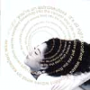
- 無防備 (unguarded)
- 防備 guarded
- マシュルームはいかが？ would you like some mushrooms ?
- 日曜処女 sunday virgin
- a fragment
- 冷たいシャワー in a cold shower
- excellent waves
- 物事はそのように進んでいく the way things go (golden baby)
- 氷 ice
- 棲息地 a habitat
- 水と油 oil & water
- HACO (vocals)
- Tom Cora (cello)
- Christopher Stephens (voices)
- 下田信久 (bass)
- 今堀恒雄 (guitars)
- Peter Hollinger (electric percussions)
- Samm Bennett (percussions)
MIDI CREATIVE: CXCA-1006 (1995)
#Charles Haywardのライヴを見に吉祥寺へ、ちょっと早めに行ったのでディスクユニオンへ。全然知らなかったんですけど、この日にこのCDが出てたみたいです。かつ(既にいつだったか忘れたけど)吉祥寺のディスクユニオンでインストアイベントをやるようで、行こうかなー。
メンツは以下の通りですねー、最近のアンダーグラウンドな人々がけっこう。音は前のアルバムにも増して、完全にHACOさんのソロアルバム的要素が濃いです。声の独特な存在感は相変わらずかな？
でもP-VINEも最近色々出しますね、
大友良英のヤツとか。(1999.10.10)
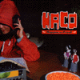
- Element
- Feather Time
- Nothing But Faces
- Mosquito 5
- Fluid of Wisdom
- Starry Night
- Invisible Fireworks
- Floodlights
- World Art Festa
- Oyster Song
- HACO (vocals,sampler,rhythm box,synthesizers)(guitars on 2.4.8.9.)
- 津山篤 (bass on 1.2.5.9.)(acoustic guitar on 3.8.9.)(bouzouki on 10.)(voice on 9.)
- Christopher Stephens (guitars on 3.9.)(voice on 2.3.4.6.9.)
- 一楽儀光 (drums on 2.5.9.)(gong on 5.)
- Peter Hollinger (drums o 1.6.)
- 山本精一 (guitars on 1.6.)
- 内橋和久 (guitar and effect on 4.)(daxphone on 7.)
- 今堀恒雄 (guitars on 5.)
- 横川理彦 (bass on 5.)
- 大友良英 (turntable on 5.)
- 外山明 (djembe drum on 9.10.)
- Hidaka Chikako (russian voice on 9.)
P-VINE RECORDS: PCD-5558 (1999.10.10)
- CRAZY PEOPLE IN THE SECRET CLUB
- EXCENTRIQUE UNDERGROUND
- SWEET SWEET DIAMOND
- 夢の羽根
- STRANGE PARADISE
- THE DOOR
- MONEY
- HOLD ON I'M COMIN'
- LUNATIC RADICALS
- 世のおわり世界の創造
- BLUE CATHEDRAL
- TUESDAY MORNING
- 橋本一子 (vocals,organ,synthesizers,piano)
- 藤本敦夫 (guitars)
- 今堀恒雄 (bass,guitars)
- 大谷尚弥 (drums)
- 濱田啓太 (drums)
- 菊池成孔 (tenor sax on 1.2.6.)
- 細畠洋一 (percussions on 2.)
- 吉田哲治 (trumpet on 8.)
- 五十嵐一生 (flugelhorn on 8.)
- 松本治 (trombone on 8.)
- 大内哲也 (guitars on 10.12.)
- 折田信雄 (guitars on 10.12.)
- 斎藤ネコストリングカルテット (strings on 10.12.)
POLYDOR: H33P-20230 (1988)
#あんまり歌は好きじゃないんです。
でも、インスト聴いてると一瞬凍っちゃうくらい格好良い瞬間が有ります。本当はものすごい事ができる人なんじゃないんだろうかと。
曲がどうこうって訳では無いんですけど、板倉文+今堀恒雄の2人のギターってのは考えてみると物凄いような気がします。
- D.M. NO.4
- 風
- COMMUNICATION
- ELIXIR
- L'ETE
- BOSSA
- NIGHT BIRD FLYING
- FROZEN ECSTASY
- ile
- FROZEN NO.2
- 生まれた時から
- 羽根の気持ち
- 終りは始まりの始まりは終りのために
- 橋本一子 (vocals,keyboards)
- 藤本敦夫 (bass,guitars)
- 大津真 (guitars,synthesizers)
- 今堀恒雄 (guitars on 2.7.12.)
- 板倉文 (acoustic guitar on 2.)
- 林克洋 (drums)
- Ma*To (tabla,tambourine,computer)
- 菊地成孔 (baritone sax on 3.)
- 斎藤ネコstring (strings)
- 松本治 (trombone on 12.)
- 菅坂雅彦 (flugelhorn on 12.)
- 小林正弘 (flugelhorn on 12.)
- 石井ミキコ (chorus)(violin on 7.)
- Noriko (chorus)
- AQ石井 (synthesizer programming)
Polydor: HOOP-20360 (1989)
#前から気になっていた、ロケット・マツのバンド。1曲目は田舎の風景を思い起こすようなBrian Enoのカバー。
大所帯バンドなのに妙なスカスカな感じと、微妙なズレとか。とても好きな類の音楽かも、買ってから聴きっぱなしです。あかねなんかとかなりメンバーがかぶるので、そんな感じのアングラ音楽を想定してたんですけど、非常に風通しの良い音でした。なんでもフランスツアーをやってきたとか・・・凄いなぁ。
メンバー的にはたまの二人とか、
シノラマの坂本弘道さｎ、元
ちゃくらとか
ほとらぴからっの横澤龍太郎さん、
あかねの面々、三木黄太さんと松井亜由美さんって
Katra Turanaに居たっけな？などなど
パスカルズという名前はPascal Comeladeから取ったそうで、そんな感じの可愛らしいところも有ります。というかKLIMPEREIなんか聴くんならパスカルズの方が30倍くらいいいんじゃないかとか思いました、音の傾向似てるだけに。(2002.10.11)
http://isweb39.infoseek.co.jp/art/pascals1/
- Taking Tiger Mountain
- 虫
- Taking Dog Fields
- Wedding Polka
- きんとんうん
- メイデイ
- 宇宙のワルツ（予告編）
- ミーターズ
- 何もないうた
- 走れ小僧
- ロケット・マツ (pianica,mandolin,acoordion,piano)
- あかね (toy piano,flute,chorus,vocals)
- 斎藤哲也 (accordion,piano,bass)
- 金井太郎 (guitars,guitalele,vocals)
- 知久寿焼 (ukulele,口琴,kazoo,おもちゃ,chorus,vocals)
- 原さとし (banjo)
- 松井亜由美 (violin,recorder)
- クリスチイヌ (violin)
- うつお (violin,recorder,chorus)
- 大竹サラ (violin,recorder,toy piano,chorus)
- 三木黄太 (cello)
- 坂本弘道 (cello,musical saw,ホーミー,tuning mater)
- 長畑風人 (trumpet,soprano sax,gas horse)
- 横澤龍太郎 (drums,percussions)
- 石川浩司 (percussions,おもちゃ,chorus)
- 野口ヤスカズ (pianica on 1.)
- 友部正人 (カウント on 9.)
オフィスロケッタ: PASK-0002 (2002.11)
#元モダンチョキチョキズの長谷部信子さんのソロアルバムです。モダチョキでは"自転車に乗って"や"天体観測"とか、濃密でかなりヘンな歌謡ポップスを書いてた人です。んで(モダチョキの時から一緒にやってた)磯田収さんとの共同プロデュースのこのアルバムはですね....更にヘンになって、かつ更にポップになってます。
もうポップさもここまで来ると恐いです、シュールです。
ちなみにボーカルも長谷部さんです。まぁ(別にボーカリストではないので)そんなに歌うまくは無いですけど、妙な可愛さがあって結構良いです。
今の世の中こんなポップ過ぎる曲は、あんまり行き場がないんですかね? 正直もっと話題になっても良いと思うアルバムなんですけど。熱心なモダチョキのファンじゃなくても、モダチョキで何か好きな曲が有ったら、きっと長谷部さんの曲と思います。そーゆー人は是非買ってみましょう。(2000.8.26)
- うさぎ
- The 音渡
- Bun太と私
- ニワトリ王子
- 彼のペリスコープ
- 天爾遠波洞窟世界
produced by Hasebe Novko & Isoda Osamu
- 長谷部信子 (vocals,keyboards,computer,toys)
- 磯部オサム (guitars,vocals,comuter,toys)(bass on 3.)
- ナスノミツル (bass)
- 三浦智津子 (drums)
KUMAGIC: KMCZ-0001 (2000)
#吉祥寺ディスクユニオンにて、オーストリア盤ですけど、日本のバンドです。オモチャで出来たアヴァンギャルドみたいな感じです、もっとハードなモノを想像してましたけど....どっちかというとAFTER DINNERとかKATRA TURANAみたいな印象を受けました。変拍子バリバリなバックに子供っぽい女の子のボーカルが乗るような曲、短い曲が沢山並びます......あんまり曲数多いのでちょっと損してるよーな気もします。
あ、今聴いてて気付いたけどDRAGIBUSにも似てるかもしれないです(DRAGIBUSはあまり好きじゃないけど)
自分の中で聴いてもいないのに過小評価してたんですけど、ちょっと見直し。(2000.6.24)
- CUTTING
- CHIPS
- Melu
- rig la
- CALIFORNIA MIXER
- GUITAR
- PAUSE
- SHOPPING
- He dodged the military service
- WALKING
- SPANISH MOLD
- MOVIE PROGRAM
- TIKATIRO
- ECHINOCOCCUS
- LIPMOOONG
- DOLPHIN
- WHIP CREAM
- PIPELINE
- 2.31 CAFE
- TEA
- WASH A GUN
- MASSACHUSETTS
- KICK
- GREGORIUS
- MOUSE TRAP
- MUFFLED TONE
- GOATee
- MICROPHONE
- SERVICE
- BLIGHT HEAVY
- DO NOT EAT
- ITOKEN (guitars,accordion,saxes,drums)
- KYOKO (vocals)
- SUZUKI (guitars)
- ONOTETSU (piano)
- UCHIYAMA (stick)
- MIZUHIRO (guitars on 5.18.28.)
- TAJI (bass on 5.18.28.)
STUPEUR & TROMPETTE!: ST-1010 (1997)
#バッファロードーターの前身バンド。NONOLってのが大野由美子さんかな、多分。
で、これが小西康陽プロデュースの2枚目みたいです(1枚目がヤン冨田プロデュース「踊ってばかりの国」)
ちょっと中途半端なラップみたいなボーカルが今聴くとちょっと痛いけど、バックはバッファロードーターに繋がるような感じ、かなりユルいですけど。
「地球百景」とかユルイっていうか、だめそーなんだけど結構好き鴨。
- Surfin' On M.O.O.G.
- センチな私
- T.I.M.
- Bongo Rock
- 宇宙散歩
- Moog Attack
- Vibe Attack
- 地球百景
- ジャンジャン
- お願い銀河系
- Cool Cool Water
- Surf & Flower
produced by 小西康陽
- MADAM J (vocals,tambourine)
- シュガー吉永 (guitars,scratch,shortwave radio,programming,vocals)
- NONOL (bass,moog,piano,space melodica,vocals)
- CHARI (drums,vocals)
MIDI: MDC8-1175 (1992)
- MESSAGE FROM BUFFALO
- Dr.Moooooooooooog
- COLD SUMMER
- HEALTH OR DIE
- CALIFORNIA BLUES
- DAISY
- シュガー吉永 (guitars,vocals)
- 大野由美子 (bass,electronics,vocals)
- 山本ムーグ (turn tables)
- 小川千果 (drums,percussions)
CARDINAL RECORDS: BDCAR-CS0002 (1994)
#とりあえず買っときました、めちゃめちゃ格好良いです。変なことばっかりやっているのに聞いてて気持ちいいです。以前のアルバムはそんなに好きではなかったのですがこれは好きです。
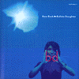
Disc 1
- New Rock
- R&B (Rhythm and Basement)
- Great Five Lakes
- What's the Trouble with My Silver Turkey ?
- Autobacs
- Socks, Drugs and Rock'n'roll
- Airport Rock
- Sper Blooper
- Sad Guitar
- No Tokyo
- No New Rock
- Sky High
- Down Sea
- Jellyfish Blues
Disc 2
- Daisy
- Jellyfish Blues
- シュガー吉永 (guitars,tb-303,shortwave radio,vocals)
- 大野由美子 (bass,mini moog,vocals)
- 山本ムーグ (turn tables,voices)
東芝EMI: TOCP-50412,3 (1998.1.28)
#グランドロイヤルは無くなっちゃったけど、BUFFALO DAUGHTERの新譜が出ました。リミックス出てたけどアルバムとしては
new rock以来なので、3年ぶり
えーと面白いけど、相変わらずな音なんですよね。ちょっと音太くなったような感じかな？1曲だけ意外だったのがアコギ+フルートで室内楽ポップな8曲目、好きです。こないだ出た
コーネリアスの新譜にも通じるモノが有るよな。
14曲目はボーナストラックでチボマットのヤツです、これもカッチョイイです。あんまりこの曲が存在感ありすぎるのも考え物ですけど。
なんだか相変わらず誉めてるんだか貶してるんだかわかんない文章ですね、ゴメンナサイ。要するに結構イイと思います、85点くらい。
現在工事中みたいだけど
www.buffalodaughter.com (2001.11.22)
- Ivory
- I Know
- Earth Punk Rockers
- 28 Nuts
- Volcanic Girl
- Five Minutes
- Robot Sings (As If He Were Frank Sinatra With A Half-boiled Egg And The Salt Shaker On A Breakfast Table)
- I
- Moog Stone
- Mirror Ball
- Long, Slow, Distance
- Discotheque Du Paradis
- A Completely Indentical Dream
- Stereotype C
- シュガー吉永 (vocals,guitars,sequences,theremin,etc...)
- 大野由美子 (vocals,bass,electronics,piano,etc...)
- 山本ムーグ (turntables,vocals,samplers,etc...)
- Matsushita Atsushi (drums on 1.10.)
- 沢田穣二 (string arrangement on 1.)
- 茂木欣一 (drums on 3.5.9.)
- 山根さち子 (flute on 8.)
- Kosmas Kapitza (percussions on 12.)
- John McEntire (additional rhythm track,marimba on 13.)
- 羽鳥美保 (vocals on 14.)
- 本田ゆか (keyboards on 14.)
東芝EMI: TOCP-65914 (2001.11.21)
#cuniform records(レコメン系のレーベル)からのリリースになったhappy familyの１枚目。ゴリゴリした音が格好良いです。
- rock and young
- shige et osanna
- partei
- rolling the law court
- kaiten (ningen gyorai)
- naked king
- drums whisper spacy
- 森本賢一 (keyboards)
- 宮野達哉 (bass)
- 牧野滋 (guitars)
- 永瀬敬一 (drums)
Cuniform Records: rune-73 (1995)
#Number Girlの向井との活動とかで有名なんだろうかな？Panicsmileの3枚目です。ギターはDCPRGにも参加しているJason Shaltonです。
格好よいアバンギャルドロックを体現したよーな感じ、個人的な好みとしてはドラムの石橋さんが可愛くて○。NATSUMENにも参加してますね。
ドラムはガスガス叩き、ギターは「ピキョーン」ってヘンな音。NATSUMENと対バンでライブやらないかなー？絶対見に行くのに。(2004.1.30)
（→
Panicsmile Official Web Site）
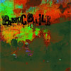
- Dryfish (干物と浪人)
- Still Life
- Neon Disco
- IronCity (鋼鉄の山河)
- Killing List (殺すリスト)
- Ghost Subway
- Secondhand Daylight II
- Yuuuca (憂香)
- Stranger in Town (世田谷異邦人)
- Silver and Gold
- 石橋英子 (drums,vocals)
- 吉田肇 (guitars,vocals)
- Jason Shalton (guitars,vocals,keyboards)
- 保田憲一 (bass,vocals)
- Esaki Noritoshi (keyboards)
- Ideriha Nobuyuki (sax)
MICRO MUSIC: MM-009 (2001)
#仙波清彦の
はにわオールスターズのバンド版、みたいなモノかな。
お馬鹿な曲が多いんですけどー、なんだか凄い事になってたりしてます。ポップス+邦楽+フュージョン？？？みたいな。どの曲も濃厚。
個人的には「家」みたいな邦楽っぽい落ち着きのある奇麗な曲とかを、また聴いてみたいかも。
- かなしばり
- おわんないの
- カタピラの花
- たたみホッペタ
- 続・おわんないの
- インドラ・チョーク
- みなと
- 体育祭
- 隅田川大惨事
- あそび
- 彼は外人
- 家
- ウェイトレス
- 仙波清彦 (drums,percussions,vocals)
- 久米大作 (keyboards)
- 青山純 (drums,percussions)
- れいち (drums,percussions,vocals)
- 藤尾よしこ (三味線)
- 本間芳伸 (guitars 1-9.)
- 寒河江勇志 (bass on 1-9.)
- 渡辺建 (bass on 10-13.)
- 柴崎ゆかり (vocals)
- 加藤譲strings (strings)
SONY RECORDS: SRCL-2134 (1984)
#池田有希子がボーカル。コンパクトなポップスになってます。はにわちゃんの雰囲気に近いかな？オバカ度合いもちょっと減っちゃったような気も....
- これでいいのか
- Selfish
- 盆踊りの手帖
- heart beat
- 飛脚転倒
- 見合の鯉心
- 愛のさざなみ
- 新大魔人
- あいみん
- 玉伝子
- 仙波清彦 (percussions,drums,tabla,timpani)
- 池田有希子 (vocals)
- 植村昌弘 (drums,percussions)
- 浦山秀彦 (guitars,banjo)
- 小川美潮 (backing vocals)
- 田中顕 (drums,percussions)
- 吉田智 (bass)
- 金子飛鳥strings (strings)
- 高良久美子 (marimba,percussions)
SONY RECORDS: SRCL-1527 (1994)
#濱田理恵さんのソロアルバム。普段はアニメ関係のＣＤによく参加しているみたいです。とても特徴のある声なのですが、余り子供っぽい内容にならずとても良くまとまっています。良いアルバムだとおもいます。バックはメトロトロン関係の人々。
- ごっこ遊びをいたしましょ
- 二月生まれ
- 地上の恋人達
- アーシャ
- 春の夜の夢
- Bye Bye Black Bird
- アネモネ
- 汚れた夏
- 無造作に愛しなさい
- 灰にもなれず 塵にもなれず
- 靴をぬいで
-Bonus Tracks-
- スペインの雨
- LIQUID GIRL
- 濱田理恵 (vocals,whistle,recorder,keyboards)
- 阿部隆雄 (bass,programming,arrangement on 1.)
- 棚谷祐一 (programming,arrangement on 2.)
- 保刈久明 (guitars on 1.3.9.)
- 板東次郎 (guitars on 2.10.)
- 夏秋冬春 (percussions on 3.5.6.8.10.)
- 鈴木博文 (bass on 4.5.6.8.10.)(guitars on 7.8.)
- 吉良知彦 (mandolin on 8.)
- 内田健太郎 (bass on 4.7.)
- 関島岳郎 (tuba,horns on 5.)
- 佐野貴志 (charango on 4.)
METROTRON RECORDS: compactron-6
#えーとCD屋さん、中古セールの2回目の訪問。昨日来たときはゆっくり見てるヒマなかったので、だらだら見てるとこれを発見。濱田理恵さんの2枚目のアルバム。
たぶん、前のアルバムから相当久しぶりのリリースになると思うんですけど、基本的に音はそんなに変わってないです。特徴あるロリ声にちょっとアニメっぽい曲....何かに似てると思ったらこないだ買ったさねよしいさ子の新譜かな？メンツも似てるし。
個人的には4曲目の矢口博康らしいサックスの音が嬉しかったりします、ぷっぷかぷー♪って感じの。(1999.10.26)
- 微熱
- みゅう
- 私の幾粒かの涙
- そんな女に私はなりたい
- SECOND CRY
- 電線
- サメの憂鬱
- 小指の約束
- ひと束の夏
- 抱いて抱いて抱いて
- デイジー
- 濱田理恵 (piano,accordion,programming,vocals)
- 西村哲也 (guitars on 1.2.3.4.5.7.8.10.)
- 鈴木博文 (bass on 1.5.8.)(guitars on 1.)(harmonica on 7.)
- 夏秋冬春 (drums on 2.3.4.5.7.8.10.)
- 矢口博康 (sax on 4.8.10.)
- 太田譲 (bass on 3.4.7.10.)
- 武川雅寛 (violin on 3.4.5.10.)(trumpet on 10.)
- 伊藤隆博 (trombone on 10.)
- 栗コーダーカルテット (recorder on 6.)
MAGNET/biosphere records: BICL-5008 (1998.12.16)
#もっと渋い人かと思ってたんだけど。えーらいアグレッシブな感じでした。
吉田達也(RUINS) + 水谷浩章(TIPOGRAPHICA)のリズム体って初めて聴いたんだけど、えれー格好いいです。こんなにグイグイ引っ張るような感じのユニットだとは思わなかったです。なんか6曲目だけTIPOGRAPHICAもどきだけど。
ほんとドラムとベースの暴れ方がイイです。水谷浩章をこんなにイイと思ったのは初めて。(2002.3.9)
- 睡眠と目覚めの間で (in a drowse)
- ghost dance
- 森の人 (man of the forest)
- OM (逢魔が時）
- night shade
- double lotus
- yellow jack
- hopper's duck
- 林栄一 (alto,soprano,baritone sax)
- 斉藤(社長)良一 (guitars)
- 水谷浩章 (bass)
- 吉田達也 (drums)
Studio Wee: SW-206 (2001)
#私はＣＤを買うまでずっと女の方だと信じていました。わかりやすく例えると"たま"に似てるかもしれないです。ハマると癖になる類の音楽。
- ズットじっと
- 月と星のボンヤリ
- 月面から目薬
- カメラ
- アブク
- 天使にそっくり
- 心配
- 支度
- 青い夜
- ピアノ
- 原マスミ (bass,vocals)
- Banana (piano,prophet)
- Ra (guitars)
- Hori (guitars)
- 狩野良昭 (guitars)
- Ogimekken (bass)
- 岡野はじめ (bass)
- 田中清司 (drums)
- 岡井大二 (drums)
- 斉藤ノブ (percussions)
- 帆足哲郎 (percussions)
- 沢井原兒 (saxophone)
- DA DA DA (arrangement)
WAX RECORDS: 27WXD-117 (1982)
- 海で暮らす
- 夜の中の夜（頂上のアベック）
- オリオン
- 夢の４倍
- フトンメイキン
- 君の夢
- 月と星のドンチャ
- ねじれ
- ボクの錬金時間
- 音のある暮らし
- 原マスミ (vocals,keyboards,guitars)
- RA (guitars,percussions)
- 板倉文 (guitars)
- 杉山トム (guitars,vocals)
- 武沢豊 (guitars)
- ogimekken (bass,percussions)
- 岡野はじめ (bass)
- そうる透 (drums,percussions)
- 仙波清彦 (おはやし,percussions)
- れいち (おはやし)
- 帆足哲昭 (percussions)
- ヤン富田 (steel drum)
- 友田啓明 (violin)
- 佐藤野百 (violin)
- 松武秀樹 (synthesizers)
- banana (produced)
WAX RECORDS: 27WXD-118 (1984 - UPITEL)
#このアルバムはゲストミュージシャンの色が結構出ています。それでも原マスミさんは原マスミさんなんですけど、個性有りすぎ。
んで、個人的には野澤美香さん(現代音楽系の人らしいです)との6曲目が好きです。
- 夜の幸
- をどる骸骨
- トラキアの女
- 眠っていたかわからない
- ムー
- 花のひかり
- 夢ならば簡単
- トロイの月
- 飛龍頭
- 約束の満月
arranged by BANANA (1.3.5.9.10.)
arranged by RA (2.)
arranged by 清水一登 (4.)
arranged by 野澤美香 (6.)
arranged by 板倉文 (7.)
- 原マスミ (vocals)
- BANANA (keyboards on 1.3.5.9.10.)
- RA (keyboards on 2.)(guitars on 3.5.9.)
- 矢壁アツノブ (drums on 3.)
- 清水一登 (keyboards on 4.)
- 板倉文 (guitars on 4.7.10.)(bandolin,siku,charango on 7.)
- Ma*To (programming on 4.)
- 堀越信泰 (guitars on 4.)
- 横澤龍太郎 (citelo ihos,drums on 4.)
- 幸田実 (bass on 4.)(contrabass,bombo on 7.)
- 吉田潔 (programming on 5.7.9.10.)
- 野澤美香 (piano on 6.)
- Theodore Mook (cello on 6.)
- Margery Daley (soprano voice on 6.)
- whacho (percussions on 7.)
- 三木黄太 (cello on 9.)
- 松井亜由美 (violin on 9.)
- 東玉川小学校6年2組のみなさん (voice on 9.)
WAX RECORDS: 32WXD-112 (1988.11.25)
#
スパンクハッピーの原みどりさんの昔のLPからのベストです。5.6.7.8.が1stの"MIDO"('87)からで、3.4.9.が2nd"KO KO RO NOTE"('88)から、2.11.12.が3rd"THE DAY I SAY "AMER JABAR" "からです。1曲目は'92のデモテープの曲らしく、ほとんどスパンクハッピーです。全体的にスパンクハッピーと比べるとおとなしい感じです。あと、現在原みどり名義で手に入る唯一のCDです。
- Bye Bye Black Baby (黒猫中也に捧ぐ)
- 蝉
- 四次元空間旅行
- too young
- 気持ち半分魔女気分
- TA RA N TE RA タイムスリップ!
- 好きという気持ち
- 月曜日の憂鬱
- パジャマのままでSTEP!
- ダイヤモンドを曇らせて
- 償いの日々
- STAY
- 原みどり (vocals)
- 菊地成孔 (tenor sax,baritone sax on 1.)(soprano sax on 2.11.12.)
- 河野伸 (keyboards,programming on 1.)
- 八尋知洋 (percussions on 2.11.12.)
- 青山純 (drums on 5.6.7.8.)
- 桜井鉄太郎 (keyboards,programming,guitars on 2.11.12.)
- 土屋潔 (guitars on 2.11.12.)
- 村上秀一 (drums on 3.4.9.)
- Jake H.Conception (sax on 5.6.7.8.)
- 富倉安生 (bass on 5.6.7.8.)
- 難波ただし (keyboards on 5.6.7.8.)
NIPPON COLOMBIA/TRIAD: COCA-13439 (1996.6.21)
#菅波(向島)ゆり子さんの80年代初期にやっていたグループ。このバンドかコンポステラやCHE-SHIZUなどの音の源流になった存在と思って良いのかも。
力強い存在感、「音を出す」って事へのこだわりが、こんな生命力のある音を生み出してるんだと思います。
演奏が上手いとか、録音がどうとか、そういう瑣末なコトからは抜け出たような音です。ジャンル云々はこのグループに関しては全く無意味かな。
12曲目は...なんだかスゴイ人数でやってます、「50人パンゴ」ってヤツかな? KATRA TURANAのメンバーや近藤達郎さんや板倉文さんなんて混じってる.....スゴイ。
あと知らなかったんですけど、ベースの今井さんは現在、時々自動のメンバーの方です。
何かに似てるかとか考えると、メンバーのその後の作品くらいしか比べるモノが無いです。それくらい唯一無二な音。76年生まれの私にとっては実体験ないのが口惜しいところ。(2000.11.29)
- ラクツ
- まっか
- あいじ
- テーマ
- 未来のタンゴ
- TAKE FIVE
- HA!
- さよなら
- ロンドン
- いけない
- シド
- 新テーマ
- ワルツ
- ハバネラ
| track 1.11. | 新宿ACB | 1980.12.12
|
| track 2.3. | 京都ドラッグストア | 1981.1.10
|
| track 4.9. | 新宿ACB | 1980.10.18
|
| track 5-8. | 目黒鹿鳴館 | 1981.7.4
|
| track 10. | 新宿ACB | 1981.2.20
|
| track 12. | 新宿ACB | 1981.5.10
|
| track 13. | 日比谷野外音楽堂 | 1981.8.15
|
| track 14. | 日大文理学部学園祭 | 1980.11.10
|
- 菅波ゆり子 (vocals,accordion,violin,piano)
- 篠田昌巳 (alto sax,percussions,vocals)
- 今井次郎 (bass,percussions)
- 石渡明廣 (drums,bass,vocals)
- 久下惠生 (drums)
- 鈴木惣一郎 (percussion on 5-8.)
- 佐藤幸雄 (guitars,vocals)
- 佐藤隆史 (drums on 1.11.)
- 有馬邦頼 (dance on 4.)
- 松山京子 (dance on 4.)
on track 12.
- 声隊: 菅波ゆりこ,平田弥生,伊藤はじめ,広池敦,鈴木ヤス,清野裕美子,板倉みどり,前田清美,山口華代子
- 笛隊: 篠田昌巳,小野打恵,吉田勝貞,大庭良治,斉藤史彦
- vln隊: 浜川崎不出子,斉藤千尋
- bass隊: 石渡明廣,今井次郎,佐藤幸雄,キノ,村松恒平
- 太鼓隊: 久下惠生,亀山賢一,菊地隆,山野ヤスコ,伊藤恵子,佐藤隆史,松野由起夫,速水恭子,近藤達郎,Pochi,Mee,真鍋太郎,Mitu,是枝,板倉文
- 踊り隊: 広野ゆう子,菅野由美子,加藤夢子,太田明美,武藤,小泉清,松森明
- 麿 (三味線)
OFF NOTE/CUT OUT RECODS: ONCO-001 (1995)
#エレクトロニカ。corneliusっぽかったり、zappaのシンクラビア作品みたいな曲も有ったり、rei harakamiみたいな流麗なテクノみたいな感じも有ったり、あとPat Methenyも思い出した。
色んな手法を使ってても表現したい事に迷いが無いのかな、目的と手段を取り違える事はな無さそうな人。まぁとにかく聴いてて楽しいです。弟の持ち物なんだけど、これは自分で買いなおそうと思います。
プログレ向き話題なんですけど、7曲目なんかはかなりカンタベリーっぽいです。エレクトロニカ・カンタベリーみたいな感じで。8曲目なんかではEggの3枚目の曲とかサンプリングされてたりもしてて（他にも有りそうだけど、わからん）きっと結構好きなんだろうなと。(2003.5.10)
flyrec.com (試聴アリ)
- Theme of first love
- Cut
- Twilights
- Cyborg dance
- Double meaning legs
- Bed side manners
- Handmade lace
- Old tapes
- Twisted sign wave
- Dream diagram
- Metal dancer
- Angelfish
- Scull
- 南極旅行
- 踊り子の休日
- ロボットナース
- モダ〜ンカクテル
- Air language
- 小人ショー
- Moment
flyrec: FLYCD-02 (2002)
#よーやく購入。わざわざライヴ見に会社帰りに表参道まで行ってきちゃいました。なんかのイベントの一部だったので、ライヴはちょびっとだけだったんですけど。
不思議なメンバー(こんだけ自分の趣味とかぶるのもめずらしいです)による不思議な音楽ですね。はじめて見たときにはReal Fishに近いなーとか思ってたんですけど、それともちょっと違う雰囲気を持ってます、D.Gunnの個性かな？
ライヴを見に行くときに一緒にいった人も「不思議な感じ」とか言ってました、やっぱそーゆー事みたいです。何かに似てるようで何にも似てない音楽。個人的には最近一番のお気に入りです。(1999.3.23)
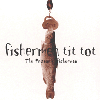
- Happy Happy Family
- Have you seen that rainbow?
- うそつきトム (Lying Tom)
- ためいきの丘 (Hill of Sighs)
- Ruby
- 森と森の間に (Between Forests)
- 獏 (Dream Eater)
- Diving For Diamonds
- 老人の歌 (Hold up them Stars)
- 福原まり (piano,accordion,vocals)
- 矢口博康 (sax,clarinet)
- 松本治 (trombone,euphoniam)
- Dennis Gunn (guitars,banjo,vocals)
- 中原信雄 (bass,mandolin)
- れいち (drums,vocals)
BARCA Label: BAR-001 (1999.2)
#テレグラフから出ていた4-Dのアルバム。ＣＤになってないので現在入手するのはかなり困難だと思います。テクノというよりNew Wave色の強い曲です。
このアルバムの他にもソノシートとかが数枚リリースされてますけど、いずれも入手困難です。
- PIPER IN THE WOODS
- 旅の人
- ひろせ
- DECIMAL NOTATION
- ブルトンの手
- ポチョムキン
- WHILE YOU SLEEP
- 小西健司 (vocals,keyboards,electronics)
- 成田忍 (vocals,guitars,eletronics)
- 横川理彦 (vocals,bass,violin,electronics)
- 中垣和也 (total direction)
TELEGRAPH RECORDS: TGEP-028 (1985)
#元アインソフのキーボード服部ませいさんのバンド。成田忍さんと横川理彦さんはこのバンドでプロデビューしたんだっけな？
えーと音はフュージョンです、とてもテクニカルで完成度の高いような。
- Amazin' & Amazin'
- Spum Rhapsody
- Dakara Dakara
- Through The Night Toward The Light
- This is It
- Caribbean Gigolo
- Jungle Banana
- Brain Damage
- 服部ませい (keyboards)
- 谷口義則 (guitars)
- 成田忍 (guitars)
- エディ細木 (bass on 1.2.4.7.8.)
- 菅沼孝三 (drums n 1.2.4.7.8.)
- 横川理彦 (violin on 3.5.6.)
- 東原力哉 (drums on 3.5.6.)
- Kim Suzi (voice on 1.2.4.)
KING RECCORDS/NEXUS: KICS-2507 (1981)
- GINZA de AIMASHO DARIN'
- ZIG ZAG ZONE
- FUNKY PONKY DONKEY MONEY
- IN THE HEART OF MY HEART
- ARTAUD LUNAIRE
- FROM JUNGLE BANANA WITH LOVE
- RAPID EYE DANCE
- SLEASE WORKER
- THE SENSE OF CANARY
- 服部ませい (keyboards,vocals)
- 谷口義則 (guitars)
- 成田忍 (guitars)
- 細木隆広 (bass)
- 東原力哉 (drums on 5-9.)
- 大曽学 (drums on 1-4.)
- 横川理彦 (bass on 7.)
- 中林憲昭 (vocals on 1-4.)
KING RECORDS/NEXUS: KICS-2508 (1982)
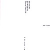
- Filament 2-1
- Filament 2-2
- Filament 2-3
- Filament 2-4
- Filament 2-5
- Sachiko M. (sampler with sine wave)
- 大友良英 (records and CDs)
- Gunter Muller (electronics,selected drums)
FOR 4 EARS RECORDS: FOR4EARS-CD-1031 (1999)
#下北沢の中古屋さんで\780。Amy Denio(THE(EC)NUDESというChris Cutlerも居たバンドにいたシアトルのマルチプレイヤー)さんの....プロジェクトかな。アバンギャルドなJazz Funkみたいな感じかな。
God Mountainからのリリースなんですけど、どっちかというとKnitting Factory系の(知らない人には何言ってるかわかんないですね、すみません)音に近いかも。
安いから買ったんだけど、結構アタリでした。(1999.4.24)
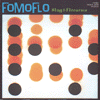
- D.P.W
- Bad Doctor
- Fat Asses
- Lift & Separate
- Funeral Music
- Eternal Sanctuary
- Stick in the Needle
- Insomnia
- Camel Surfer
- Nobody's Listening
- 78
- Insomnia #9
- Amy Denio (vocals,keyboards,bass,sax)
- Dennis Gunn (guitars,vocals)
- Hoppy神山 (keyboards,tapes,violin,voice,noiz)
- Tada Makio (drums)
- Honda Tatsuya (bass)
God Mountain: GMCD-024 (1995)
#元Shi-Shonen,
Real Fishで現
Fishermen Tit Totのピアニスト、福原まりさんの初のソロアルバムです。1曲目のメンバーはほとんどfishermen tit totですが他は斉藤ネコカルテットとの共演です。この曲はチョコレートのCMソングですね
森の中に迷い込んでいくような雰囲気を持っています、本当はもう少しポップな内容のものを予想していました。良い意味でちょっと裏切られた感じです、ピアノの音ひとつひとつが雰囲気を持っていて、やっぱりすごく良かったです。
- 常習者のごとく
- ロシア鉄道
- 老いた王様
- 忘れられた少年
- 詩人の家
- 森へはどうやって帰るの?
- SPRINGS (春、春、春)
- FINAL
- 福原まり (piano)
- れいち (drums on 1.)
- 中原信雄 (bass on 1.)
- 矢口博康 (baritone sax on 1.)
- 斉藤ネコカルテット (strings)
- Kuniyoshi Seiji (flute)
- Watanabe Takashi (programming)
LASTRUM: LACD-0004 (1997.11)
#藤井郷子さんのCDです。ちょっと悩んで、結局買っちゃいました、お金無いのに。
このCDでは藤井さん+M.Dresser+J.Blackのトリオの演奏、早川さんとのデュオ、ピアノソロ、の3パターンの演奏が収められてます。丁度入門用には良いのかも。
特にトリオの演奏が気に入りました、即興の先鋭な感じに加えて曲としての一貫性みたいなのが感じられて。共演の二人もすごいセンスですね。
- HIZUMI (歪み)
- SOUND OF STONE
- ZAUZY
- PAST OF LIFE
- BAL-LAD
- DROPS
- MOONLIGHT/SOLA
- KITSUNE-BI (狐火)
- THIS IS THE THING THAT I HAVE FORGOTTON
- 藤井郷子 (piano)
- Mark Dresser (bass)
- Jim Black (drums)
- 早川紗知 (soprano sax on 3.5.8.)
TZADIK: TZ-7220 (1999)
#以前から気になっていた、ビジリバの渕上純子さんと船戸博史さんの"ふちがみとふなと"+千野秀一,大熊亘のCDです。COMPOSTELA,A-MUSIK,CHE-SHIZUなどと共通した雰囲気を感じました。
5,6曲目をは船戸さん、それ以外は渕上さんの作曲です。渕上さんの声はこのCDで初めて聴きましたけど、素朴ですが低音が力強い声です、このバックにはかなりしっくり来ます。派手さやポップさは無いですけど段々好きになっていきそうなCD
ちなみに大熊亘さんのトーンも相変わらず、昭和初期を想起するような音。(私は)久々に千野さんのピアノの音を聴いたんですけど、やっぱりこの人スゴイですね。音の響かせ方というか、一瞬K.Tippettを思い起こすような瞬間もありました。(2000.10.1)
- フミオさんへ
- 汚い言葉で
- 宮大工の孫
- ゴミの日
- 都会のカラス
- キリギリス楽士
- ふくよかな女
- 博学と無学
- ナ・ララ
- 渕上純子 (vocals,melodion,kazoo,pipe,jingles)
- 船戸博史 (contrabass)
- 大熊亘 (clarinet,alto sax,bass clarinet)
- 千野秀一 (piano)
Yoshida House Label: YHL-003 (2000.6)
#PHEW名義の1枚目、これ以前には
アーントサリー。なんというかもうこの人でしかない世界ですね。ドイツ録音でC.Plank(ドイツロックの立役者)のスタジオでの録音らしいです、CanのJ.LiebezeitとH.Czukayも参加。不安な音響、遠くから聞こえてくるPHEWの声、そんな感じのアルバム。
最近、坂本龍一とのシングル"終曲"をプラスして再発されたみたいです。
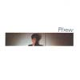
- CLOSED
- SIGNAL
- DOZE
- DREAM
- MAPPING
- AQUA
- P-ADIC
- FRAGMENT
- CIRCUIT
- Phew (vocals)
- Holger Czukay (bass)
- Jaki Liebezeit (drums,percussions)
- Conny Plank (synthesizers,keyboards)
WAX RECORDS: 32WXD-104 (original release 1981 - PASS RECORDS)
#国内録音の２枚目。前作に比べうたの比重が上がっているような印象をうけました。
近藤達郎さんは相性良いですね、何か自然にそこに在るような感じで。Phewさんのバックでそんな風に感じれる事がスゴイ事かも。
#P-VINEからの再発版はこのメンバーでのライヴ音源が収録されてるみたいです、これから買う人はそっちを買いましょう。
- Dirge
- May
- Act
- Bloom
- Spot
- Bay
- Flood
- Vision
- Youth
- Past
- H-Stag
- Fall
- Phew (vocals)
- 近藤達郎 (keyboards)
- 箕輪正弘 (drums,percussions)
- 大津真 (bass,guitars)
BAIDIS: TECN-18481 (1987)
#1枚目と同じくドイツ録音、ノイバウテンやD.A.F.のメンバーも参加。phewさんの独特な不安定な歌い方に負けず周りも神経質な音響を作っています。
ちなみにJ.Liebezeit = CAN, A.Hacke = Einsturzende Neubauten, C.Haas = DAFとスゴイですね、新旧ドイツロック勢ぞろい。
- The last song (さいごのうた)
- Our likeness
- Being (あるもの・あったもの)
- Like water and water (水と水のように)
- Glitter of night (夜の光)
- Spring (春)
- Smell (におい)
- Depth of the forehead (額の奥)
- Our element
- Expression
- Ocean (海のように)
- PHEW (vocals)
- Jaki Liebezeit (drums,percussions)
- Alex Hacke (guitars)
- Thomas Stern (bass)
- Christo Haas (keyboards)
ALFA/MUTE RECORDS: ALCB-622 (1992)
#PARCOレーベルから'91に出たミニアルバム。"うた"の比重がとても上がってますね(いわゆるフツーの曲とは全然違いますが)。バックは1.4.がE.D.P.S.の恒松正敏さんと高橋豊(この人三橋美香子さんの
GRACEに参加してます)で、2.3.がUBiK2の大津真さんですね。
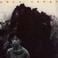
- しろいこころ
- とおいうた
- ことばのなかへ
- いちばんのもの
- PHEW (vocals)
- 恒松正敏 (guitars on 1.4.)
- 高橋豊 (programming on 1.4.)
- 大津真 (guitars,keyboards on 2.3.)
- 藤本敦夫 (bass on 2.3.)
- 藤井信雄 (drums on 2.3.)
PARCO: QTCA-1002 (1991.10.21)
#最新作です。非常に穏やかな内容です。「ひとのにせもの」とかは最近の
MOSTなんかの雰囲気もしますけど。
メンバーはいGROUND-ZEROの大友良英さんに、元スターリン西村雄介さん、PONの植村昌弘さんなど。凄い。
- わたしときみのわかれめ
- おそい春
- 秘密のナイフ
- 急がなければ
- 花がきれいなわけ
- おわりのあと
- みえない道
- ひとのにせもの
- きれいな日
- いつか
- きょうの名残り
CREATIVEMAN DISC: CMDD-00010 (1995)
#菅沼孝三のスネアの音と、水野正敏の高速フレーズのベースと、矢堀孝一のハイパーギター。
音はバリバリのフュージョン。
- Bluff
- Back Skip
- Caribbean Funk Method
- 庭に鰐
- Urgent
- カレカ
- Beat Kids
- 窮鼠猫を噛む
- 矢堀孝一 (guitars,guitar synth)(programming on 3.7.8.)
- 水野正敏 (bass)(programming on 2.6.)
- 菅沼孝三 (drums)
COMPOZILA/SUBCONSCIOUS: SUB-1003 (1996)
#なんだか、棚の奥から突如発掘されたCD。遥か昔に捨て値で売ってたのを買って余り聴いてなかったみたい。
80年代。
- 緑のコトバ
- 「好きよ嫌いよ」症候群
- 正義の私
- 歩く速さで君に恋して
- Dear My Friend
- きまぐれ雲
- 恋ひとつ
- LIFE IS THERE
- 白い日傘
- SWEET MY LOVER
- 金津ヒロシ (acoustic guitars,chorus,computer)
- 本間哲子 (vocals,chorus,keyboards)
- 矢口博康 (sax on 1.6.10.)
- 小倉博和 (guitars on 1.3.5.6.7.9.)
TEICHIKU: TECN-28025 (1989)
#えーとJohn Kingって人が来日中に組んでいたバンドのライヴ盤です。新宿の駅ビルの中古屋で
\800でした。何が気になったって近藤達郎 + 青山純ってのがなんか良さそうで。そんなに派手なプレイはないですけど、味のある演奏してます、青山さんがちょっとアバンギャルド系で演奏するのもちょっと珍しいような気もしました。
内容は気持ちアバンギャルドなジャズファンクですかね、やっぱ青山さんのドラムが良いです。
J.Kingだと
Electric Sunってのも持ってて、有る意味似たような感じですけど、Electric Sunはヘヴィ過ぎで疲れるのでこっちの方が好きかな。(2000.6.22)
- Bad Dreams
- Hell Blonde Groove
- Solo vs. Lead
- Geisha-Maki
- Solo vs. Lead
- Waiting for Tanya
- Solo vs. Lead
- Blues for Marilyn (Let's Get Down)
- The Funk Never Stops
- Solo vs. Lead
- What Funk You Got
- Solo vs. Lead
- KamiFukuoka Blues
- Polkabuki
- John King (guitars,vocals)
- 大友良英 (turntables,self-made guitars)
- 近藤達郎 (keyboards)
- 青山純 (drums)
- 早川岳晴 (bass)
- 梅津和時 (sax,clarinet on 2.8.10.11.14.)
- 巻上公一 (voice on 10.14.)
disk union/phenotype: pp-002 (1996)
#地元の中古CD屋さんにて、\600でした。\600なら買いでしょう、いくら貧乏でも。
FRICTIONの新しいアルバムです、重くってザクザクしてて格好良いです。ロックです。(1999.5.9)
- ZONE TRIPPER
- HIGHLIFE
- MONEY LAUGH
- HEAD OUT HEAD START
- CHOKE
- THE HEAVY CUT
- MISSING KISSING
- BREAK NECK
- RED LIGHT DUMB
- RECK (bass,vocals,guitars)
- Imai Akinobu (guitars)
- 佐藤稔 (drums)
BASS TRAP: VACV-1503 (1995.10.25)
#梅津和時さんのバンド、確かアートスフィアにハニワ関係のライヴを見にいった時です。
- 我等皆兄弟 (ale brider)
- ドナドナ
- 静かなブルガール (der shtiler bulgar)
- アメリカのトルコ人 (terk in america)
- 魔法使いサリー
- 哀歌 (doina)
- 路傍の旋律 (der gasn nigun)
- 梅津和時 (clarinet,bass clarinet,alto sax,bass drum)
- 大熊亘 (clarinet,bass clarinet)
- 野本和浩 (britone sax,bass clarinet)
- 中尾勘二 (soprano sax)
- 板谷博 (trombone)
- 多田葉子 (alto sax)
- 松井亜由美 (violin)
- 向島ゆり子 (violin)
- 浦山秀彦 (banjo)
- 張紅陽 (piano,accordion)
- 沢田穣治 (double bass)
- 立花泰彦 (double bass)
- 佐野康夫 (kit drums,snare drum)
- 芳垣安洋 (kit drums,cymbals,bass drum)
- 永田砂知子 (xylophone,percussion)
- 巻上公一 (male vocals)
- 東京ナミィ (female vocals)
produced by 梅津和時,野田茂則
co-produced by 多田葉子
ナニ レコード: NCD-01/LMCD-1433
新宿ディスクユニオンの...6階だっけな？何故か\900、安いでしょ。
- Odessa Bulgarish
- Tun Balalayke
- Bay Mir Bistu Sheyn (素敵なあなた)
- Kandel's Hora
- A Nakht In Gan Eydn (エデンの園の一夜)
- Dos Geshrey Fun Der Vilder Katshke (野生のアヒルの叫び)
- 梅津和時 (clarinet,bass clarinet,alto sax,bass drum)
- 大熊亘 (clarinet,bass clarinet)
- 野本和浩 (britone sax,bass clarinet)
- 中尾勘二 (soprano sax)
- 関島岳郎 (tuba,alto horn)
- 板谷博 (trombone)
- 多田葉子 (alto sax)
- 松井亜由美 (violin)
- 向島ゆり子 (violin)
- 浦山秀彦 (banjo)
- 張紅陽 (accordion)
- 沢田穣治 (doublebass)
- 立花泰彦 (doublebass)
- 佐野康夫 (kit drums)
- 芳垣安洋 (kit drums)
- 永田砂知子 (marimba,percussion)
- 石崎陽子 (marimba,percussion)
- 巻上公一 (male vocals)
- 東京ナミィ (female vocals)
NANI RECORDS: NCD-101 (1996)
#上のとセット、こっちは\1000でした新宿ディスクユニオン。
- Parirosn (たばこ)
- Araber Tantz
- Dovid, Shpil Es Nokh A Mol
- Ershter Vals (初めてのワルツ)
- Terkish Yale V'yove Tantz
- Baym Rebin In Parestina (パレスチナのラビ達は)
- Those Were The Days (悲しき天使)
- 梅津和時 (clarinet,bass clarinet,alto sax,bass drum)
- 大熊亘 (clarinet,bass clarinet)
- 野本和浩 (britone sax,bass clarinet)
- 中尾勘二 (soprano sax)
- 関島岳郎 (tuba,alto horn)
- 板谷博 (trombone)
- 多田葉子 (alto sax)
- 松井亜由美 (violin)
- 向島ゆり子 (violin)
- 浦山秀彦 (banjo)
- 張紅陽 (accordion)
- 沢田穣治 (doublebass)
- 立花泰彦 (doublebass)
- 佐野康夫 (kit drums)
- 芳垣安洋 (kit drums)
- 永田砂知子 (marimba,percussion)
- 石崎陽子 (marimba,percussion)
- 巻上公一 (male vocals)
- 東京ナミィ (female vocals)
NANI RECORDS: NCD-102 (1996)
#宇都宮泰さん（
アフターディナー）プロデュースのCD。
っていうか、結構昔からやってるバンドみたいっすね全然知らなかった。曲はいわゆるジャパニーズプログレです。ロック調の曲はちょっと聴いててキツイかも、孵化とか迷い月みたいな落ち着いたテンポの緻密な曲はイイんですけど。
で、録音。音色とかテープ逆回転の使い方とかはやっぱり他には全く無いようなモノで、やっぱりこの人だけは別次元だなーと思います、最近のエレクトロな人達とは全然視点が違います。んでもアフターディナーの1枚目の奇跡みたいな音の再現までは行ってないような感じ。
とりあえず
オフィシャルへ (2001.12.23)
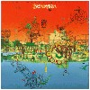
- 迷い月 (missing moon)
- ふたこぶラクダ (2-hump camel)
- 星の涙 (weeping star)
- ピアノの音楽 (fairy ring)
- イ短調 (A minor)
- 黄色い空 (yellow sky)
- アラベスク (arabesque)
- ハモニカ楽士 (harmonica charmer)
- 肌色のクレヨン (skin colored crayon)
- シャンプーの残骸 (A minor penjor)
- 孵化-メタモルフォシス (incubation - metamorphosis)
produeced,arranged,engineered by 宇都宮泰
- はなこ (vocals)
- 中西正温 (guitars)
- 田所暁 (bass)
- 高木秀晃 (keyboards)
- 相原克偉 (drums)
- 徳丸理恵 (violin)
- 藤森彩 (violin)
- Maianita Willis (bell)
HOREN: MIMI-011 (2001.12.24)
#をー、まるで"三界の人体地図"の頃のP-Modelのよーです。解凍前のP-Modelが好きだった人ならハマるかも。秋元一秀(秋元きつね)さんはウゴウゴルーガとかでCG作っていた人です。extra trcakでMac/Winのデータが付いてます、さすが本職といった感じで面白いです。
こーゆー音楽久しぶりです。P-Model聴き漁ってた頃を思い出します、Plasticsとかヒカシューとか有頂天とかロングバケーションとか。一曲だけ何故かきどりっこ(松前公高も参加してたヘンなテクノポップバンド)を思い出すような曲がありました。(1999.5.21)
#そうそうライヴ見に行きました。初めて見に行ったのに解散ライヴだったんですけど。
メンバーは秋元さんの他は三浦俊一(ex-有頂天,P-Model)とはっちゃき(SKYFISHER)で、ひどく格好良かったです。最近のP-Modelの5倍くらい格好良かったです、個人的には。
音楽活動再開してほしいなぁー。
-
-
- Insect's life
-
- REAL Resort
-
- COSMOS
-
- 舞う
-
- Amphibian
-
- Neptuna
-
- テキトーな人面牛
-
- 遥か西へ
On My Beach
-
- Mangroove!
Graphic Japan: GRJC-01014 (1996.10.20)
#sightさんの家に花火を見に伺った時に、どっかで回収したとかで頂いちゃいました。ありがとうございました。
民族音楽、現代音楽、アヴァンギャルド、チェンバー、プログレ。いろいろ混じった一言では形容しがたい音楽ですね。
何がすごいって、こんな内容でEPIC/SONY RECORDSからCDが出てるという所かも。(1999.8.1)
- 幸福な短い生涯 (SHL)
- LAMB 4
- A B
- 遅れてきた指揮者
- PREST
- Bobidi
- HAWAIIAN ATOMIC SMILE
- 月から来た男
- SMELL GARDEN
- GODZILLA
- LAMB 3
- DIZZY GIZZY
- SPEED GARDEN
- 野村誠 (piano)
- 澤民樹 (violin)
- 豊永亮 (guitars)
- Bob Barraza (percussions,voice)
- 小林薫 (horn)
EPIC/SONY RECORDS: ESCK-8019 (1992.9.21)
#うーん、貰ったのはいいけどほとんど聴いてない。わかんなかったコレ。売れてるの？
嫌いなら書かなきゃいーんすよね、ごめん。
- Dream Punk Rocekr Part I
- Revolution Of Hair-Nudist
- Going Up The Country
- Same ni kuwareta musume
- Kuro no funauta
- 100 Dance Terrorists
- Erect The Funkmaster
- Roll Over "Love-Stylist"
- Tropical Distortion
- Satelite Contrast
- Rodeo Drome
- Dream Punk Rocker Part II
- Sports Car Blues
- V.O.G. is Original Sportsman
- Hayabusa to watashi
- 暴力温泉芸者
- ASA-CHANG
- 浦山秀彦
- 清水一登
- 菊地成孔
- Yunoki Ryuichiro
- Masuko Shinji
- Matsui Tohru
- Gomi Ippei
- Akta Masumi
- Ito Daisuke
東芝EMI: TOCT-9495 (1996)
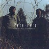
- そこに初めと終わりがあることを知るように
- 扉は開かれている、夜
- 日はまた昇る
- 銀河に在る岸辺
- 機械の中の幽霊
- 道標
- 眼の高さにある太陽
- まだ一度も見たことのない所から
- 非望の歌
- やまない雨を待ちながら
- 追越してきたものたちの声は既になく
- 砂漠で犬が死んだ
- 勝井祐二 (violin,synthesizer,percussion)
- 鬼怒無月 (guitars,synthesizer)
まぼろしの世界: MABO-012 (2001)
#近所の中古屋さんで\880でした。ボアダムズはあまり良いイメージ持ってなくって、"SUPER GO"を初めて聞いたという有様でした。んで、ちょっと昔はどーなのか気になって購入。
結果、やっぱハードコアですね。私には最近の宗教的な音の方が良いみたいです、攻撃的な音に関してはこの頃の方がすごかったのかも。
- NOISE RAMONS
- NICE B-O-R-E GUY & BOYOYO TOUCH
- HEY BORE HEY
- BO GO
- BORE NOW BORE
- OKINAWA RASTA BEEF (MOCKIN' FUZZ2)
- WHICH DOOYOO LIKE?
- MOLECICCO
- TELEHORSE UMA
- HOY
- BOCABOLA
- HEEBA
- POY (MOCKIN' FUZZ1)
- BOD
- CHEEBA
- POP TATARI
- CORY & THE MANDARA SUICIDE PYRAMID ACTION OR GAS SATORI
- GOD MOM (bod,pistol,produce)
- HYLA (the basears,vox)
- YAMA-MOTOR (odb guitar,vox)
- YOSHIMMY P-WE (drum1,pet,vox)
- ATARI (drum2,pad,vox)
- YOSHI-KAWA (singing)
- KING KAZOO EYE (kazoo & nothing,ahhhg)
REPRISE RECORDS: 9-45416-2 (1992)
#延々と「ズガガガガ」が33分ちょい。ゴメンナサイ、最近病弱な私には向いてませんでした。(2000.6.6)
- HARD TRANCE WAY (KARAOKE OF COSMOS)
WARNER MUSIC JAPAN: WPC2-7513 (1994)
- SUPER GO !!!!! → shine in * shine on
- SUPER PUNK
- eYe (vocals,mix)
- YAMAMOTOR (guitars)
- HIRA (bass)
- YOSHIMI P-WE (vocals,drums)
- EDA (?????)
- ATR (drums)
- 和泉希洋志 (electronics)
WARNER MUSIC JAPAN: WPD6-8420 (1998)
#ますます宗教がかってきたボアダムズ。これで一つの完成形かな？電子ノイズから入って単調なビートで段々高揚して行きます、ハレの日。
実家帰ったときに弟の部屋からこれが聞こえてきたときはちょっとのけぞりました。
- SUPER YOU
- SUPER ARE
- SUPER GOING
- SUPER COMING
- SUPER ARE YOU
- SUPER SHINE
- SUPER GOOD
- eYe (vocals,mix)
- YAMAMOTOR (guitars)
- HIRA (bass)
- YOSHIMI P-WE (vocals,drums)
- EDA (?????)
- ATR (drums)
WARNER MUSIC JAPAN/A.K.A. RECORDS: WPC6-8433
#新譜、小学校のお道具箱みたいなのの中にはTシャツとCD2枚が入っていて、開けると箱の中から不思議な音が鳴り出しました。ほんとに。
宗教的というか土着的な響きを感じる音楽です、前作よりも聴きやすくはなってるような気もするんですけど、なにかトランスして行くような感覚は前作以上かも。
2枚目のほうは、ボーナスCDでライヴ音源を収録、ボアダムズのライヴ音源って初みたいですね。一回生で見てみたい....
あ、ちなみに三曲目は、ハートマークで四曲目はウズマキみたいなマークでした。gifで作ろうかと思ったけど、大きさが揃わないんでヤメ。(1999.11.6)
- ○
- ☆
-
-
- 〜
- ◎
- ↑
- Ω
- ずっと
-
- LIVE NOV'98 (OSAKA CITY UNIV. OUTDOOR FREE CONCERT)
- ○
- EYE (mix,vocals,synthesizers,samples,turntables,computer,electronics,edits)
- YAMAMOTOR (guitars,vocals)
- HILAH (bass,effects,vocals)
- YOSHIMI (drums,percusions,casiotone,vocals)
- ATR (drums,percusions,electric pad,vocals)
- E-DA (drums,percussions,electric pad,vocals)
WARNER MUSIC JAPAN/A.K.A. RECORDS: WPC6-10044/10045 (1999.10.27)
#八王子から帰る途中...「ブックセンターいとう」の3枚で900円コーナーにありました。最初見たとき仕切り板かと思いました。ホーカシャンのマキシです。
メトロファルスの伊藤ヨタロウと濱田理恵のユニットです。
- 薔薇より赤い心臓の歌
- 憂鬱なチェリーボーイ
- まぼろよつむぎ
- 薔薇より赤い心臓の歌 [望郷編]
- 伊藤ヨタロウ (vocals)
- 濱田理恵 (vocals,piano)
- HONZI (violin)
- 西村哲也 (mandolin,acoustic guitars)
- バカボン鈴木 (wood bass on 3.)
- 田村玄一 (steel pan on 3.)
- 川口義之 (harmonica on 4.)
MIDI: MDCS-1018 (1998.11.18)
#西荻窪、友達の家から帰る途中の古本屋さんで売ってました（注：新品）札幌のピアニスト宝示戸亮二さんの1993年に発売されたCDにボーナストラックの8cm CDを足した再発盤です。1993年のロシアでのライヴを収録したものです。
ピアノの中に色々なモノを入れて演奏する、いわゆるプリペアドピアノの人なんですけど・・・メロディがとても優くて切ない感じ。前に法政大で見たKeith Tippetを思い出しました。
緊張感の有る即興と、綺麗な響きの構築っていう部分がとてもうまく融合されてるよう。ライヴ見てみたい。(2002.12.28)
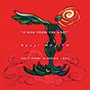
SOLO PIANO IN MOSCOW
- Introduction
- HIROSHIMA
- MY TREASURE
- KAIYU
- Improvisation 1
- MONGOL MONGOL
- Improvisation 2
- Ending
SOLO PIANO IN NOVOSIBIRSK
- Introduction
- HIROSHIMA
- MY TREASURE
- KAIYU
- Improvisation 1
- MONGOL MONGOL
- Improvisation 2
- Ending
- THE EARTH
- MY TREASURE
- 宝示戸亮二 (piano,small instruments,voice,etc)
darko: dkcd01/dksd01 (2000.7.19)
TRIGRAM: TR-P 902 (1993)
#吉祥寺ディスクユニオンにて\600。値段の割にはけっこう....いやかなりイケてるかも。
高良久美子さんがかっこいいです、男前です。強烈なビートの上に乗っかる高速フレーズはほんとかっちょいいです。
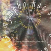
- Arh (Nympho)
- First Movement (Gnome)
- Pause One (Symbiosis)
- Second Movement (Nariad)
- Pause Two (Symbiosis)
- Third Movement (Oread)
- Pause Three (Symbiosis)
- Fourth Movement (Salamander)
- Pause Four (Symbiosis)
- Fifth Movement (Sylph)
- Sixth Movement (Nymph)
- Arh - Blood Orgy
- ホッピー神山 (keyboards)
- 湊正史 (drums,metals)
- 芳垣安洋 (drums,percussions,vibraphone,batphones,metals)
- 高良久美子 (marimba,vibraphone,percussions,xylophone)
- スティーブ衛藤 (metals,wave drum,percussions)
- 広瀬淳二 (sax,noise machine,metal board)
GOD OCEAN RECORDS: GOCD-002 (1995)
#えーと曲とか結構プログレっぽかったりします。んでも女の子ボーカルがやたらと可愛くって....ギターは歪んでロックしてて.....とにかく、ごった煮バンド。
確かにかっちょええです。こんだけ多面性が有って、ハズレ曲が無いのってスゴイかも。最近流行りのエレクトロっぽい雰囲気が無いってのも男気が感じられて。
BOATオフィシャル
- LISTENING 40 (burn up the club '99)
- PLANET FOXY
- 狂言メッセージ
- グッバイ・マイ・ストレンジ・ナンバー 28
- 銀色うつ時間
- ラッキー・スイサイダル
- PRINTED
- 代打デストロイ&サーチ
- NO MESSAGE
- 紋味
- 雲番人Bと釣り人A
- DON'T YOU
- LISTENING 40 (close your eyes '00)
produced by 會田茂一
- A.S.E. (guitars,vocals,electric sitar,sample edit,mellotron)
- アイン (mimig guitar,vocals)
- しおり (bass,vocals,synth bass)
- マユコ (drums)(backing vocals on 1-4.)
- 坂井キヨオシ (piano,rhodes,organ,synthesizers)
- 會田茂一 (programming on 1.)(banjo on 3.)(electric harp on 4.)
- 西岡ヒデヒロ (trumpet on 1.13.)
- 清水一登 (marimba,bass clarinet on 11.)
- MAICO (backing vocals on 12.)
- ahaco (backing vocals on 12.)
- Kovas (voice on 12.)
eastwest japan: AMCN-4501
#俳優の佳村萌さんと張紅陽さんの...ユニットかな。このアルバムすごく良いです、初めて聞いたときはとまっちゃいました。音的にはすごいヘナヘナしてるんですけど...なんか子供の頃の記憶みたいなイメージがあります、原マスミに通じるものがあるかも。
#追記: 復活しました、
ライヴ見に行きました。
なんか思ってたよりもずっと良かったです。前ここの項で「あんまり歌はちょっと〜」みたいな事書いちゃったんですけど、訂正。すごい存在感のある歌でした、また見に行きます。(2001.9.20)

- 天女
- 初恋のあとのあと
- 痛い時間
- 七夕
- 花子さんの場合
- 海ざる
- カメレオン・パーティー
- 重陽
- す・き・ま
- 残夢
- 端午
- さっちゃん
- ダンスの楽園
- 佳村萌 (vocals)
- 張紅陽 (keyboard,flute,recorder,accordion,chorus)
- 清水一登 (bass clainet)
- れいち (chorus)
- 浦山秀彦 (guitars)
- 向島ゆり子 (violin)
- 斉藤ネコ (violin)
- 近藤達郎 (clarinet,harmonica)
- 横澤龍太郎 (percussion)
- whacho (percussion)
- バカボン鈴木 (bass)
- 渡辺等 (bass)
- 幸田実 (bass)
vivid sound: CHOP.D-09 (1989)
#ちょっとなんて言えば良いのか分らない音楽ですが、特徴のある女性コーラスが一番印象に残ると思います、かなり特異な編成のバンドですがとても格好良いです。全体に緊張感のある演奏が気持ち良いです。
- HOLY ROLLER
- アラビアの象
- 子供のトロッコ
- リゴ
- OCTOPUS-COMMAND
- 飛行する子
- 架空の魚
- 金属の胎児
- T-REX
- 勝井祐二 (violin,vocals)
- 鬼怒無月 (guitars)
- 高良久美子 (vibraphone,marimba,glockenspeil,percussions)
- 大坪寛彦 (bass)
- 岡部洋一 (percussions)
- さがゆき (vocals)
- 安紀 (vocals)
- 福岡ユタカ (vocals on 6.)
- 東京ナミィ (vocals on 4.)
- 広瀬淳二 (saxophone on 9.)
まぼろしの世界: ISIS-0111 (1994)
#えーと、2枚目。安紀さんは抜けてしまっています(この後さがゆきさんも結局抜けてしまうことになりますが)
ゲスト参加のYEN-CHANGがカッコいいです、相当。PINKとかHALOとかだと全然好きと思わなかったんですけどね、カッコイイです。
最後の曲の徐々にテンション上がっていく感じなんか、やっぱりこのバンドならでわ...かな？ロックですねー。
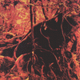
- MOBILE
- 大地の子
- CAUCUS-RACE
- COTTLESTON PIE
- GEL-COLLOID
- 子供の軍隊
- TERMINAL MAN
まぼろしの世界: MABO-006 (1996)
#友達のトクタケ君(現在坊主頭)から借りました、ボンフルの4枚目。私がライヴを見た頃は既にボーカルの居ない編成になっていて、CD-Jかなんか使って色々な試みをしてましたけど、その頃と比べても随分音が変化しているみたいです。
"何がどう?"とか聞かれると説明しづらいんですけどね、とってもロック的になってます。なんだか随分昔の鬼怒さんのインタビューかなんかで、Led Zeppelinがどうのこうの言ってたのが有ったように覚えてるんですけど(当時は全然ピンと来なかった)3曲目なんて随分J.Pageっぽいギターが聴けます、その頃からこんな音が(鬼怒さんの)頭の中に有ったのかもしれませんね。
同じ日に買った
ROVOの新譜もテンション高いんですけど、トランス/テクノみたいな緊張感の高め方をするROVOに比べて、やっぱりこっちはロック的....肉体的な感じです。
(2000.4.23)
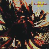
- Minus One
- Prayer
- Screen Game (electric)
- Storm bird Strom dreamer
- Sono-bank
- Old Blind Cat
- 鬼怒無月 (guitars,synthesizers)
- 勝井祐二 (violin,vocal)
- 岡部洋一 (drums,percussions)
- 大坪寛彦 (bass)
- 高良久美子 (vibraphone,percussions,organ)
まぼろしの世界: MABO-010 (1999)
#植村昌弘さんのバンド。脈絡の無い転調/転拍子が続きます、曲として成立してるのが凄いです、とてもストイックでカッコイイ音です。ゲストでこれに合わせちゃってる金子飛鳥も凄いと思いましたけど。とりあえず植村昌弘さんのドラムがキモチ良いですね。
- ユーミン #3
- ジョージ２世 #8
- ペテン師 #2
- ユーミン #5
- ペテン師 #4
- '93.8.12 #1
- ペテン師 #5
- ジョージ２世 #6
- うそつき #2
- ジョージ #10
- 広瀬淳二 (saxes)(noise machine on 2.4.7.10.)
- 鬼怒無月 (guitars)
- 清水正樹 (fretless bass)(freted bass on 7.)
- 高良久美子 (vibraphone)(percussions on 1.)
- 植村昌弘 (drums,percussions)
- 金子飛鳥 (e-violin on 2.)(violin on 9.)
CREATIVEMAN DISC: CMDD-00001 (1995)
#チボマットの片割れ本田ゆかのソロアルバム、Tzadik(John Zornのレーベル)からのリリースです。
とてもチボマットみたいな感じの曲も有れば、テクノ、民族音楽、映画音楽、ポップなど多種多様。ごちゃごちゃしてるよーな気もしますけど、一曲一曲が結構良いので気にならないです。
自分の好きな音楽の必要条件である
可愛いインストという要素を十二分に含んでいて、とても気に入りました。いやかなり好きだろこれは。
チボマットの最近のヤツは非常に洗練されててカッコ良かったんですけど、これは何だか内側を向いたような感じを少し受けました。聴いてて
鈴木さえ子さんを思い起こすような一瞬が有ったり。(2002.11.28)
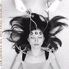
- Small Circular Motion
- Why Do We Distruct The Machines We Made?
- Do Creators Hate Us?
- A Happy Loser Day, I Quit A.A., I Never Went Anyway
- My Tears Form A Pond In Your Garden
- You Think You Are So Generous, But It's The Most Conditional "Anything" I've Ever Heard -Jumping The Gap Between Me And Myself-
- Driving Down By The Hudson River, We Saw The Blood Red Burning Sky
- Sun Beam -Nothing Hurts-
On A Cold Winter Morning I Walked Back Home
On A Street Paved With Pieces Of Broken Hearts
- Single Silver Bullet
- Some Days I Stay In Bed For Hours
- Schwaltz
- The Last One To Fall Asleep With
- Night Diving
- Liberation #6 -Leaving The Memories Behind
- 本田ゆか (drums/sequencer programming,keyboards/sampler)(guitars on 2.)(bass on 2-10.)(mini disc on 11.)
- Duma Love (add'l beats on 2.3.5.)(main beat,bass,keyboards on 2.)(d-beam solo on 3.)
- Timo Ellis (guitars on 1.2.3.6.)(bass on 6.)
- Brundt Abner (keyboards on 6.)
- Dougie Bowne (conga programming on 10.)
- Bill Ware (end vibe,piano solo 10.)
- Rick Lee (samples on 1.)
TZADIK: TZ-7703 (2002)